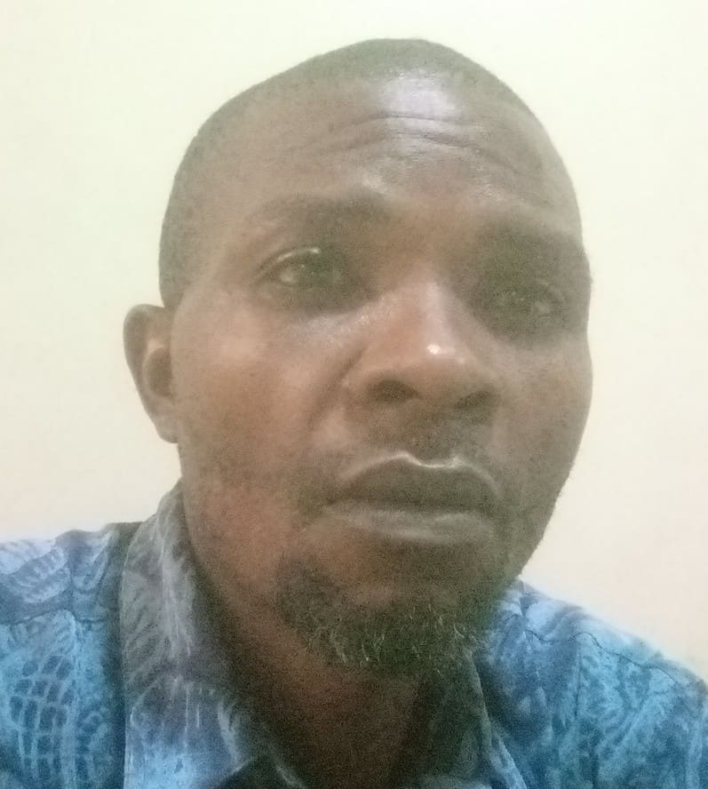

Kalu Ogba Okala
About Me

My name is Kalu Ogba Okala. I am from Nigeria and I am a BYU-Pathway Worldwide student learning web development and software programming. I enjoy learning new technologies, solving problems, and finding better ways to help people and businesses. My goal is to become a skilled software developer and use technology to make life easier.
Nigeria, West Africa
Nigeria is a country in West Africa known for its rich culture, diverse people, natural resources, and entrepreneurial spirit. It is my home country, and I am proud of its traditions and opportunities. Nigeria also has a growing technology industry where web development and digital skills can help solve important problems.